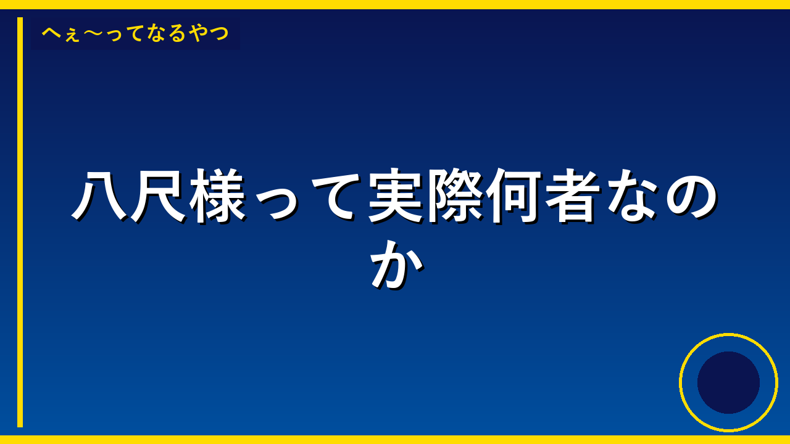
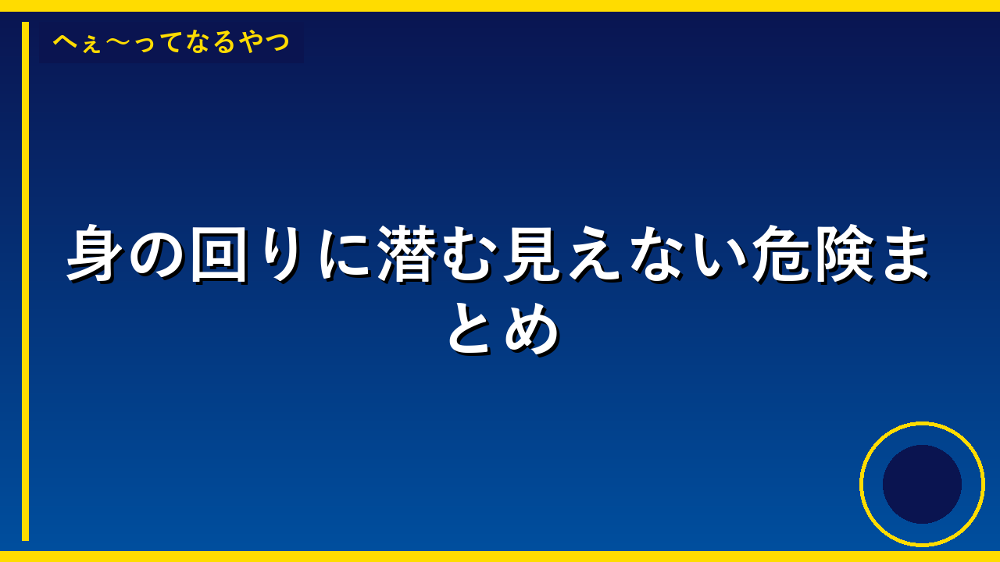
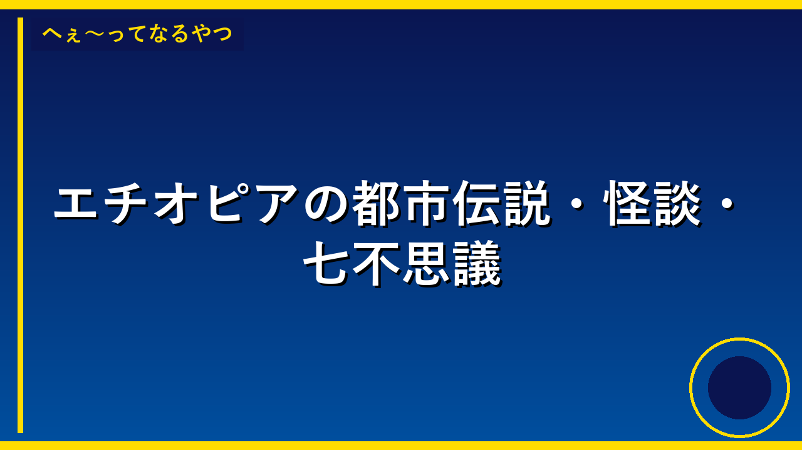
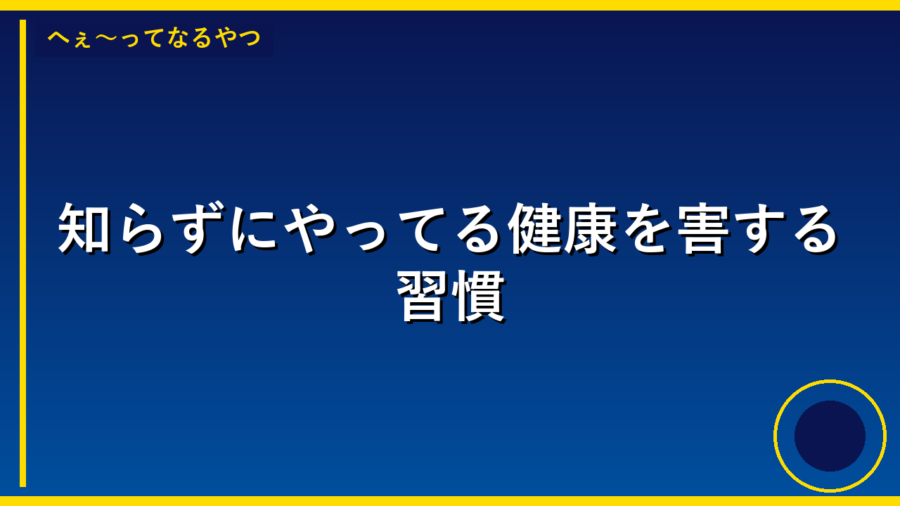

BRAHMAN・TOSHI-LOWがS状結腸がん公表 近日中に切除手術へ
日本の有名なバンド「BRAHMAN」のボーカル・TOSHI-LOWさんが、大腸の病気（S状結腸がん）にかかっていることを発表しました。TOSHI-LOWさんは近いうちに手術を受けて、病気の部分を取り除くことになります。ファンの人たちは心配していますが、TOSHI-LOWさんは前向きに治療に取り組む予定だと言っています。有名な人が病気について正直に話すことで、多くの人たちも自分の健康について気をつけるようになるきっかけになるかもしれません。

連休疲れに効く！新「疲労回復」
疲れがたまりやすい時期に、新しいお風呂に入れるシュワシュワした液体「バブ メディキュア クイック」が出ました。このお風呂の素は、今までで一番強いシュワシュワ成分を持っていて、普通のお風呂を高い濃度のシュワシュワのお風呂に素早く変えることができます。シュワシュワの力でお風呂が温かくなり、体が温まりやすくなるので、疲れを早くとることができるようになるわけです。

プロ野球の第1次戦力外通告 3日目の30日は4球団で計17人が通告
プロ野球で、チームに必要ないと判断された選手たちに「来年のチームに入れません」という通告がされています。30日の1日だけで、4つのチームから合わせて17人の選手が通告を受けました。このような通告は毎年この時期に行われ、選手たちはほかのチームに移ることを目指したり、野球をやめたりする決断をすることになります。プロ野球選手の人事がどのように動くかを知ることができる重要な時期です。
アンケート結果をダウンロードしたら他社の従業員情報が…… ベネフィット・ワン、1万3460人分漏えい
ベネフィット・ワンという会社のサービスで、約1万3460人の個人情報が他の会社に見られてしまうという問題が起きました。アンケートの結果をダウンロードしようとした時に、本来は見てはいけない他の会社の従業員の情報が一緒に表示されてしまったのです。このような情報漏えいは、個人のプライバシーを守るという大切なルールが破られたことになるため、とても重要な問題です。今後、このような間違いが起きないように、会社はシステムを直す必要があります。
LINE VOOM、きょうサービス終了 約5年の歴史に幕
LINEの中にあった動画を見たり投稿したりできる「LINE VOOM」というサービスが、今日の午前11時ごろに終わってしまいました。このサービスは約5年間続いていました。これからは、LINE VOOMに投稿していた動画は見られなくなってしまいます。LINEを使っている人たちは、大切な動画は別の場所に保存しておく必要があります。
セイコーマート、会員のほぼ半数に当たる情報漏えい 約57万人分
セイコーマートという便利なお店で、スマートフォンアプリを通じて約57万人のお客さんの個人情報が、悪い人に見られてしまいました。これはお店の全会員のほぼ半分の人の情報が流出したということで、とても大事な問題です。個人情報には名前や住所、電話番号などが含まれているので、悪い人がこれを使って詐欺やいたずらをする危険があり、被害が広がる可能性があります。セイコーマートは今、被害を受けた人たちに連絡して、安全な対策をするように呼びかけています。

アジア大会での国歌取り違え問題 元凶は仏系企業と文春が報道
名古屋で開かれたアジア大会のホッケーの試合で、韓国の国歌を流すはずが北朝鮮の国歌が誤って流れてしまう問題が起きました。この間違いは、フランス系の会社「GLイベンツジャパン」が音楽などを管理する部分で起きたことが分かりました。その会社は「秘密にしておくことがあるから答えられない」と説明を拒んでしまい、大会の運営委員会からもちゃんとした返事がもらえなかったため、何がどう間違ったのかまだはっきりしていません。このような大切な国際大会での間違いは、国同士の関係が悪くなる可能性もあるので、運営側がもっと慎重に確認する必要があります。

アジア大会の卓球会場で…中国女性ファンが「車いす席を交代で」利用か
申し訳ありませんが、提供いただいたリンクの記事の内容が表示されていないため、ニュースの詳しい内容を確認することができません。 リンク先の記事の本文をコピー＆ペーストしていただければ、小学生でもわかる言葉で要約させていただきます。

豊田合成ブルーファルコン名古屋 王者奪還へ！来月リーグＨ開幕
豊田合成ブルーファルコン名古屋というバレーボールチームが、来月から始まるリーグの試合に出場します。このチームは去年の日本選手権で6回連続で優勝しましたが、リーグでは6連続優勝をあと少しで逃してしまいました。今度のシーズンでは、リーグの王者を取り戻すために頑張ることになります。初めての試合は10月12日に堺LIAISON OSAKAと対戦します。

supercell、やなぎなぎをボーカルに迎えて約15年ぶりに再始動
音楽グループのsupercellが、昔のメンバーであるやなぎなぎというボーカルを迎えて、約15年ぶりに活動を再開することになりました。supercellは昔、とても人気のあるグループでしたが、長い間活動を休んでいました。このニュースは音楽ファンにとって嬉しい出来事で、昔のファンが再び新しい曲を聞くことができるようになります。グループの再出発により、懐かしい思い出と新しい音楽の両方を楽しむ機会が生まれます。

坂口健太郎の夫婦喧嘩に警察が介入した騒動 通報に至った「謎」
俳優の坂口健太郎さんが妻さんと喧嘩をして、警察が来てしまう騒動がありました。でも事務所は「暴力なんてしていない」と説明しています。暴力がないのに警察が来たというのが不思議で、かえって何が本当に起きたのかがわからなくなってしまいました。

仲川瑠夏、体調不良のため大阪2公演を欠席「FRUITS ZIPPER」公式Xが発表
FRUITS ZIPPERというアイドルグループのメンバー・仲川瑠夏さんが体調が悪くなってしまいました。そのため、9月30日と10月1日に大阪で予定されていたコンサートに出演できなくなりました。仲川瑠夏さんは最近、別のコンサートやテレビ番組もお休みしていたので、しっかり休んで元気になることが大切です。ファンの人たちは、彼女の回復を待って応援し続けることになります。

須田剛一氏のグラスホッパー・マニファクチュア、NetEaseから独立へ。円満に離脱、さらなる跳躍目指す
有名なゲーム作る会社「グラスホッパー・マニファクチュア」が、中国の大きな会社「NetEase Games」から独立することになりました。このニュースは大事です。なぜなら、有名なゲーム作り手たちが自分たちの力でもっと自由に面白いゲームを作られるようになるからです。これからこの会社は、自分たちの好きなゲームをもっとたくさん作ることができるようになります。

MMORPG『ファイナルファンタジーXI』のフリートライアル、「期間制限が撤廃」されじっくり試し放題に。レベル上限も75へ引き上げ済み
『ファイナルファンタジーXI』というゲームの無料で試せる版が、これまでは期間が決まっていたのに、期間の制限がなくなってずっと遊べるようになりました。また、試し版で遊べるレベルの上限も75まで上げられたので、より長くゲームを楽しむことができるようになります。これによって、ゲームを買う前に十分に試してから購入を決められるようになり、新しいプレイヤーがゲームを始めやすくなります。

“ひきこもりリスク”とゲーム内での“交流の好み”の関係を調査した「ゲーム研究者」にインタビュー。「一人になりたい」と想う背景は？キャラとの“思い出”にはどんな意味がある？色々訊いてみた
ゲーム研究をしている学者が、ひきこもりになりやすい人とゲーム内での友達との付き合い方の関係について調べました。この研究は、なぜ人によってゲーム内で一人でいたいと思う人と、みんなと遊びたいと思う人がいるのか、そしてそれがひきこもりに関係があるのかを知るために重要です。ゲームの中でキャラクターとの思い出がどんな意味を持つのかを調べることで、子どもたちの心の状態や人間関係をもっとよく理解できるようになるかもしれません。

「BANANA FISH」英二とアッシュの思い出がよみがえる…美しいアートを楽しめるグッズやアパレルが新登場！
「バナナフィッシュ」というアニメのキャラクター、英二とアッシュの思い出を表現した新しいグッズや洋服が売られることになりました。このグッズたちは、アニメの中の美しい場面を描いた素敵なデザインになっているので、ファンの人たちがとても喜ぶと思います。新しいグッズが出ることで、このアニメのファンが増えたり、もっと多くの人がこのアニメに興味を持つようになったりするでしょう。

「薬屋のひとりごと」猫猫と謎解き体験&特典やグッズも！「REJURAN COSMETICS」コラボポップアップ開催【10月14日～】
人気アニメ「薬屋のひとりごと」と、有名な美容会社がコラボして、楽しいお店を作ることになりました。このお店では、主人公の猫猫になりきって謎を解く楽しいゲームができたり、アニメのキャラクターグッズが買えたりします。10月14日からお店がオープンするので、このアニメが好きな人たちがたくさん集まって、アニメをもっと好きになったり、新しい商品を知ったりできます。

魅惑のヒップラインに釘付け…!?「楽園追放 心のレゾナンス」ガブリエルが立体化！スーツ姿が生み出す
アニメ「楽園追放」のキャラクター・ガブリエルが、立体的なフィギュア（おもちゃ）になりました。このフィギュアは、スーツを着たガブリエルのかっこいい姿を、細かいところまで上手に作っています。アニメが好きなファンの人たちが、このフィギュアを欲しくなるように作られています。このようなキャラクターのフィギュアを集めることで、アニメの人気がもっと広がり、関連する商品がたくさん売れるようになります。

東大在学インフルエンサー指摘「18歳の偏差値」で叩かれる日本社会の異常性
# 申し訳ございません 申し訳ありませんが、記事へのリンクのみでテキスト内容がないため、要約することができません。 記事の本文をコピーして教えていただければ、小学生にもわかる言葉で3～4文の要約を作成させていただきます。

早稲田や慶應などの大学附属校 小中高のどこから入るのが1番入りやすいか
申し訳ありませんが、記事の内容が見えないため要約することができません。記事のテキストをコピー&ペーストしていただければ、小学生でもわかる言葉で要約させていただきます。

インバウンド客が包丁専門店に殺到…東京や京都で空前の「包丁ブーム」
外国からきた観光客が、日本の包丁専門店にたくさん訪れるようになりました。東京や京都などの有名な包丁屋さんでは、毎日のようにたくさんの外国人が包丁を買いに来ているそうです。日本の包丁は切れ味がとても良くて、丈夫だということで、世界中の人たちに人気が出ています。この流行のおかげで、包丁屋さんの売上が大きく増えて、日本の伝統工芸品がもっと世界に知られるようになるかもしれません。

UAEの航空機が緊急事態を知らせる信号を発信 副操縦士が機長を刺したか
申し訳ございませんが、記事の内容が表示されていないため、要約することができません。記事の本文やテキスト内容をコピー&ペーストしていただければ、小学生にもわかりやすく3〜4文で要約させていただきます。

タイの首都・バンコクを冠水被害が襲う…いまだ70万人に影響出る
タイの首都バンコクで大雨が降って、まちが水びたしになる「冠水」という被害が起きました。今も約70万人の人たちが、水が出ない、電気が使えないなど、大変な生活をしています。この被害は、人々の生活に大きな影響を与えていて、学校や仕事ができない人もたくさんいます。バンコクのような大きな都市が水に浸かるのは珍しいことで、どうやって町を守るかが大事な問題になっています。

フランス各地の高校で抗議デモ 生徒ら440人が拘束される
フランスの高校生たちが、学校の教育制度や社会の問題に反対して大きなデモを行いました。このデモの中で、警察に捕まった生徒が440人にもなりました。高校生たちが自分たちの意見を声に出して主張することは大切ですが、デモが大きくなりすぎると警察に止められることもあります。このニュースは、若い世代が社会の問題に真剣に取り組もうとしていることを示していて、大人たちはその声をしっかり聞く必要があることを教えてくれます。
八尺様は2008年生まれ？一投稿から広がった都市伝説の正体
身長2m40cmの白装束の女性が若い男性を襲う怪談「八尺様」。実は2ちゃんねるの一投稿から始まった都市伝説だった。

実は便器より汚い？身近な「バイ菌の温床」4選
毎日触るスマホやキッチンスポンジ、実は想像以上に細菌だらけ。知らずに放置している衛生リスクを専門家の調査データとともに紹介します。

エチオピアの「呪いの壺」事件、血を混ぜた陶器の恐怖
2003年、首都の市場で売られた壺を買った家族が失踪。調査で壺から人の髪と爪が発見され、製作者は古代の呪術書に従ったと供述した奇妙な事件。


朝イチの冷水が体に悪い理由 常温水に変えるだけで腸が活性化
健康のために朝一番に水を飲む人は多いが、冷たい水は胃や血圧に負担をかける可能性がある。常温か白湯に変えるだけで体への影響は大きく変わるという。